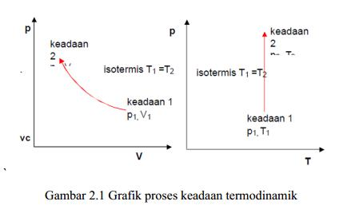
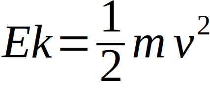
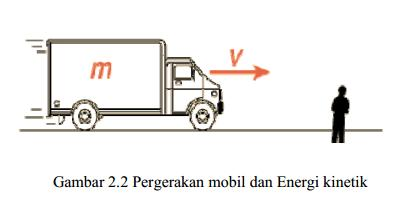

Prinsip Mesin Konversi Energi
Rangkuman
- Mesin Konversi energi memiliki ciri antara lain : adanya proses mengubah energi (padat, cair, gas) yang digunakan menjadi energi bentuk lain (mekanik, panas, dll)
- Pemodelan matematik adalah suatu metode untuk mecari hubungan antara faktor-faktor fisik yang satu dengan yang lainnya menggunakan simbol-simbol dan koordinat matematik. Dalam ilmu termodinamika koordinat-koordinat atau besaran fisik akan selalu melingkupi semua rumusan termodinamika adalah Voume V, Temperatur T, Tekanan p, Kerapatan r dan besaran-besaran lainnya.
- Kerja adalah besaran turunan dari tekanan atau temperatur pada termodinamika.
- Kerja pada volume konstan W=m.R.DT
- Kerja pada tekanan kostan W= pDV

- Bentuk energi yang ada di alam antara lain:
- Energi adalah suatu besaran turunan dengan satuan N.m atau Joule. Energi dan kerja mempunyai satuan yang sama
- Energi Kinetik ; energi suatu benda karena bergerak dengan kecepatan V contoh , mobil yang bergerak, benda jatuh dan lain-lain , maka energinya dapat ditulis


- Energi potensial adalah energi yang tersimpan pada benda karena kedudukannya.
- Energi potesial pegas adalah energi yang dimiliki oleh benda yang dihubungkan dengan pegas untuk berada pada kedudukan tertentu karena penarikan pegas.
- Energi mekanik pada benda-benda yang berputar misalnya poros mesin-mesin fluida (turbin, pompa, atau kompresor) dinamakan Torsi, yaitu energi yang dibutuhkan atau dihasilkan benda untuk berputar dengan gaya sentrifugal F dimana energi tersebut pada r tertentu dari pusat putaran.
- Energi Aliran atau kerja aliran adalah kerja yang dilakukan oleh fluida yang mengalir untuk mendorong sejumlah massa m ke dalam atau ke luar sistem.
- Energi Panas (Q) yaitu energi yang ditransfer ke atau dari subtansi tertentu karena perbedaan temperatur.
- Energi dalam (U); energi dari gas karena pergerakan pada tingkat molekul, pada gas ideal hanya dipengaruhi oleh temperatur saja.
- Entalpi (H); sejumlah panas yang ditambahkan pada 1 mol gas pada tekanan konstan, dengan cp panas jenis pada tekanan konstan
- Energi yang tersedia ; bagian dari panas yang ditambahkan ke sistem yang dapat diubah menjadi kerja.
- Sifat energi adalah dapat ditransformasi dan ditransfer dan dapat dipidahkan kebenda lain.
- Hukum termodinamika I adalah hukum konversi energi yang menyatakan bahwa ENERGI TIDAK DAPAT DICIPTAKAN ATAU DILENYAPKAN, energi hanya dapat diubah dari bentuk satu ke bentuk lainnya.